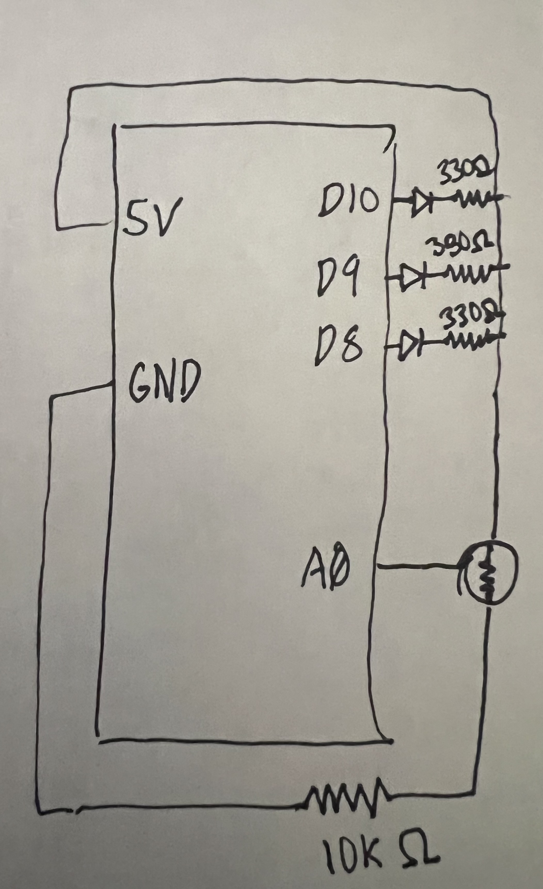
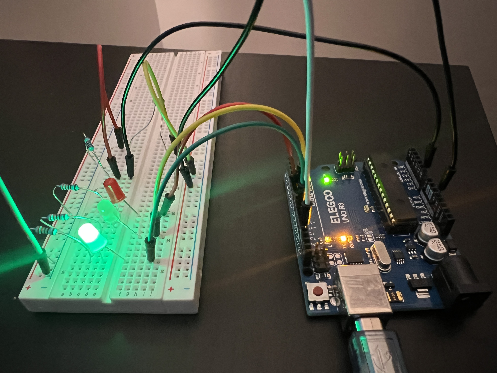
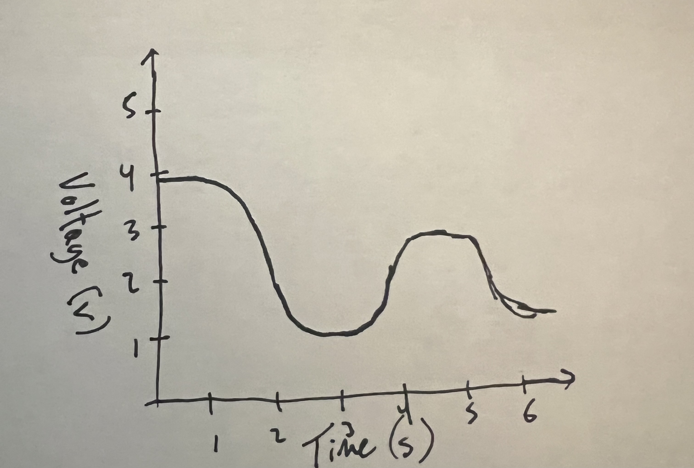

// Store the analog pin used to read the voltage divider output
const int sensorPin = A0;
// Store the pin for the red indicator LED
const int redLedPin = 8;
// Store the pin for the yellow indicator LED
const int yellowLedPin = 9;
// Store the pin for the green LED that will fade using PWM
const int greenPwmLedPin = 10;
// Store the reading from analogRead (0 to 1023)
int sensorValue = 0;
// Store the mapped PWM value (0 to 255) for analogWrite
int pwmValue = 0;
// Store the lower bound of the expected sensor reading in dark
const int darkReading = 90;
// Store the upper bound of the expected sensor reading in bright
const int brightReading = 930;
void setup() {
// Start serial communication so we can print custom debug messages
Serial.begin(9600);
// Configure the red LED pin as an output
pinMode(redLedPin, OUTPUT);
// Configure the yellow LED pin as an output
pinMode(yellowLedPin, OUTPUT);
// Configure the green PWM LED pin as an output
pinMode(greenPwmLedPin, OUTPUT);
}
void loop() {
// Read the voltage divider output at A0 as a number from 0 to 1023
sensorValue = analogRead(sensorPin);
// Convert the sensor reading into a PWM value (0 to 255) for LED brightness
pwmValue = map(sensorValue, darkReading, brightReading, 0, 255);
// Clamp the PWM value so it never goes below 0 or above 255
pwmValue = constrain(pwmValue, 0, 255);
// Set the green LED brightness using PWM so brightness changes with light level
analogWrite(greenPwmLedPin, pwmValue);
// Turn off the red LED by default before using the if-statement logic
digitalWrite(redLedPin, LOW);
// Turn off the yellow LED by default before using the if-statement logic
digitalWrite(yellowLedPin, LOW);
// If it is very dark (low ADC value), turn on the red LED as a warning
if (sensorValue < 250) {
// Turn on the red LED to indicate the "dark" state
digitalWrite(redLedPin, HIGH);
// Print a custom message describing the current state and readings
Serial.print("Room state: DARK | raw=");
// Print the raw sensor value to the serial monitor
Serial.print(sensorValue);
// Print the PWM value that is being sent to the green LED
Serial.print(" | pwm=");
// Print the PWM value as the final brightness command
Serial.println(pwmValue);
}
// Otherwise if it is medium light, turn on the yellow LED
else if (sensorValue < 700) {
// Turn on the yellow LED to indicate the "medium" state
digitalWrite(yellowLedPin, HIGH);
// Print a custom message describing the current state and readings
Serial.print("Room state: MEDIUM | raw=");
// Print the raw sensor value to the serial monitor
Serial.print(sensorValue);
// Print the PWM value that is being sent to the green LED
Serial.print(" | pwm=");
// Print the PWM value as the final brightness command
Serial.println(pwmValue);
}
// Otherwise it is bright, so keep red/yellow off and let green brightness show the level
else {
// Print a custom message describing the current state and readings
Serial.print("Room state: BRIGHT | raw=");
// Print the raw sensor value to the serial monitor
Serial.print(sensorValue);
// Print the PWM value that is being sent to the green LED
Serial.print(" | pwm=");
// Print the PWM value as the final brightness command
Serial.println(pwmValue);
}
// Delay slightly so the serial monitor is readable and values are stable
delay(200);
}
Schematic & Circuit:

Including the formulas used to calculate the correct resistors per LED

Functioning circuit:
Additional Questions:
1: In your voltage divider, can the variable resistor be either R1 or R2 or does it need to be one or the other?
The variable resistor in a voltage divider can be used as either R1 or R2,
but its position determines whether the measured voltage increases or decreases with changes in resistance.
If the variable resistor is placed on the high side (connected to 5V), the output voltage decreases as its resistance increases;
if it is placed on the low side (connected to ground), the output voltage increases as its resistance increases.
2: Draw a graph where the x-axis is time and the y-axis is voltage.

3: Imagine you had 10-bit PWM and a 16-bit analog-to-digital converter instead. How would this change your map() code?
If the ADC were 16-bit, analogRead() would return values from 0 to 65535 instead of 0 to 1023,
and if PWM were 10-bit, analogWrite() would accept values from 0 to 1023 instead of 0 to 255.
The map() function would be updated to scale the larger input range into the larger output range, but its structure and purpose would remain the same.